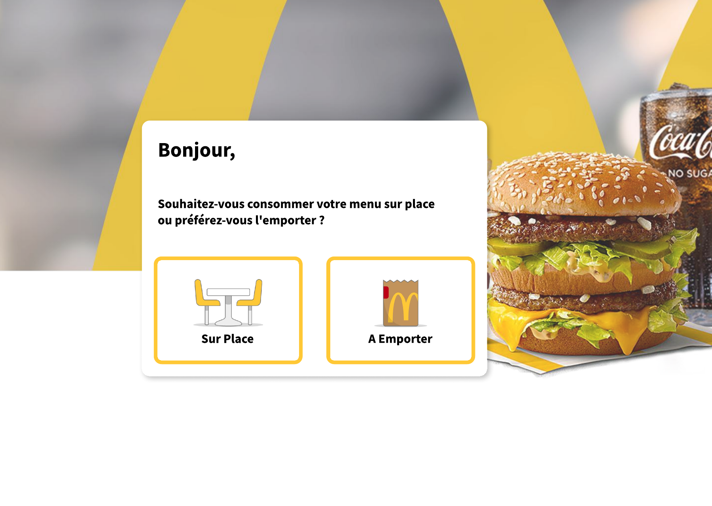
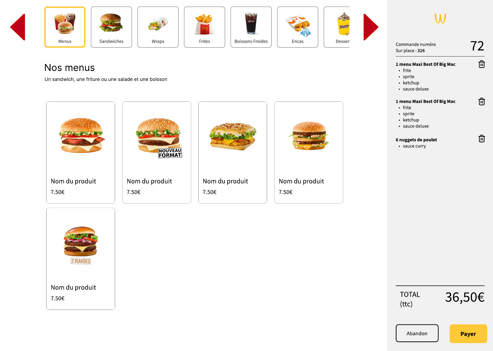
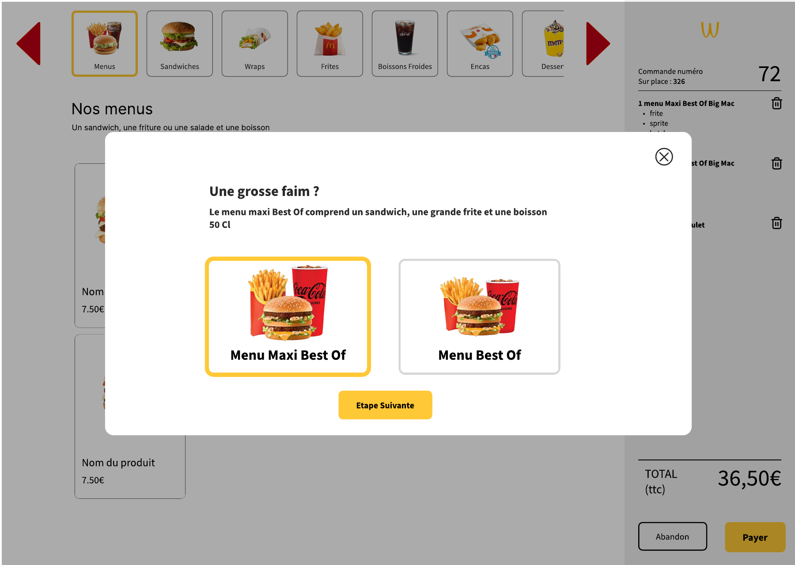
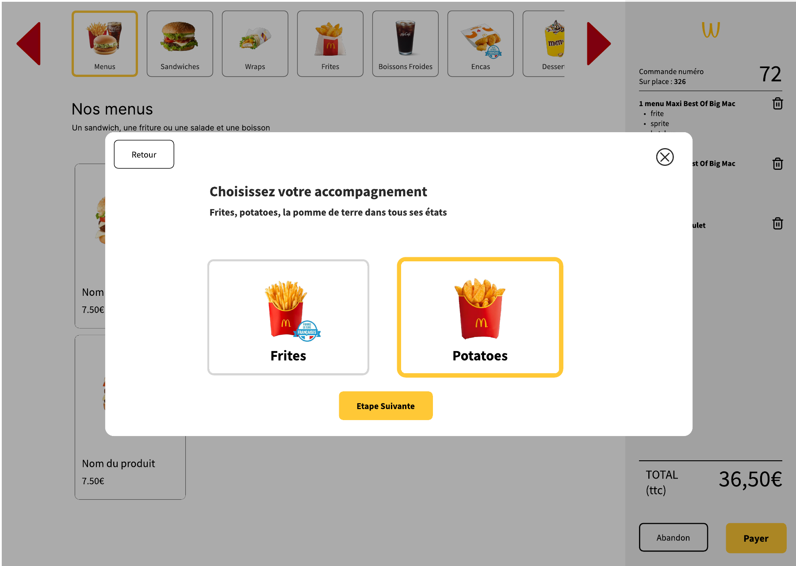
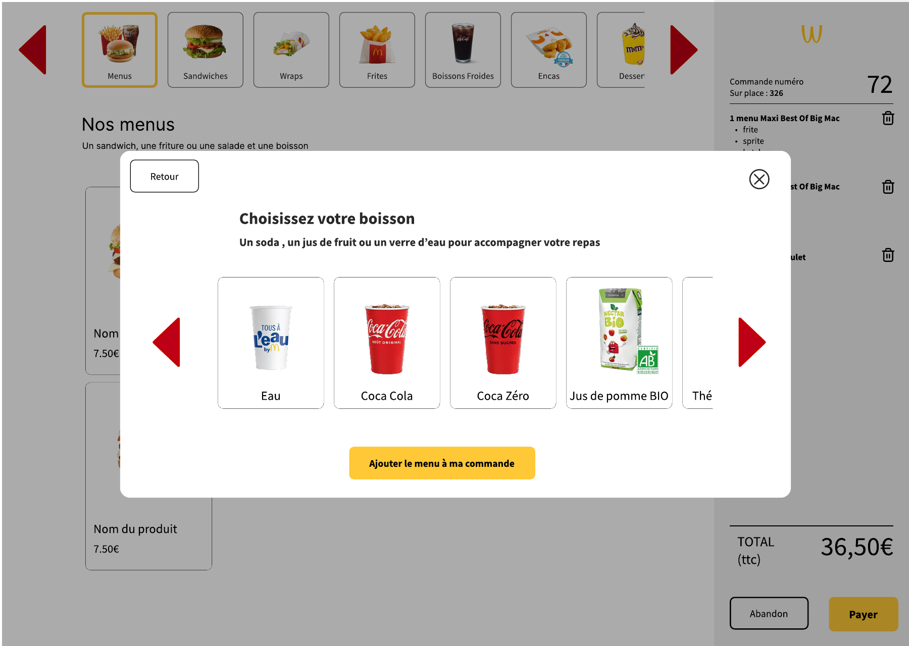
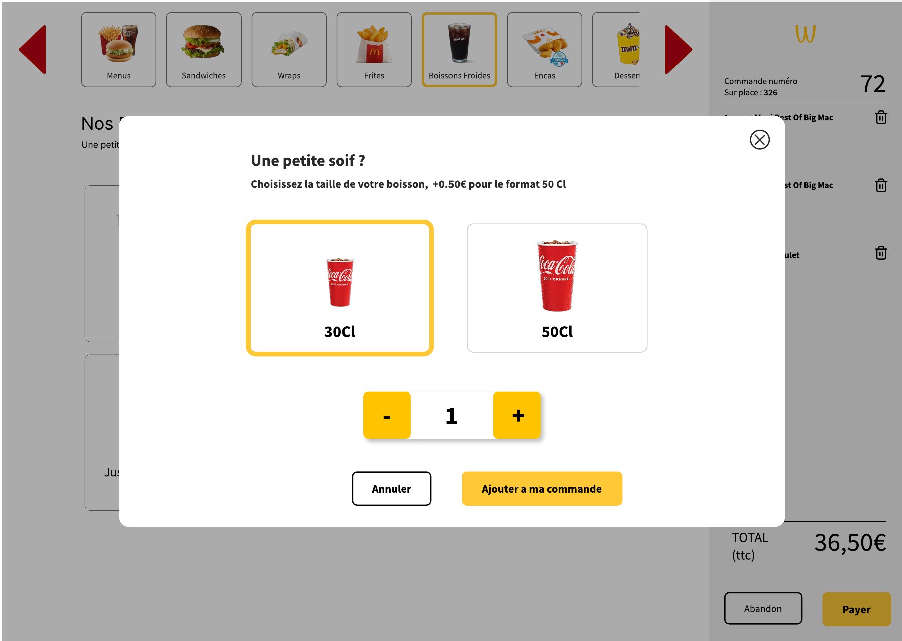
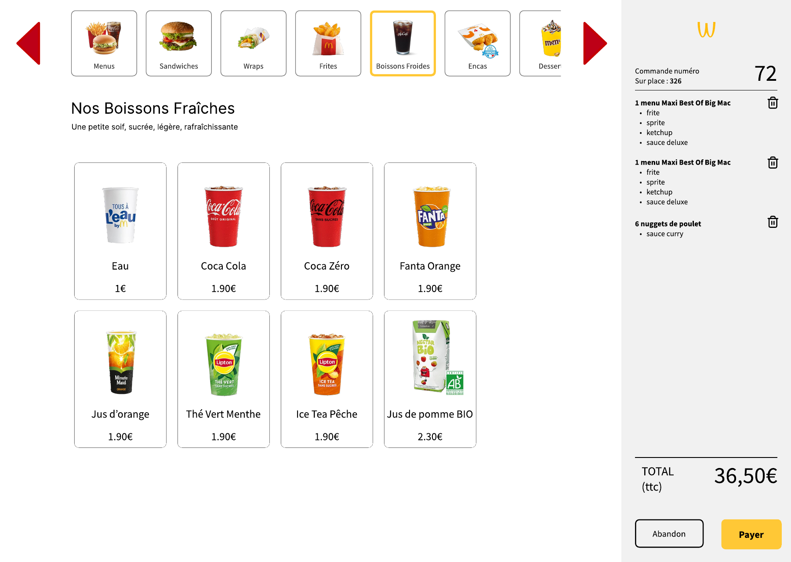
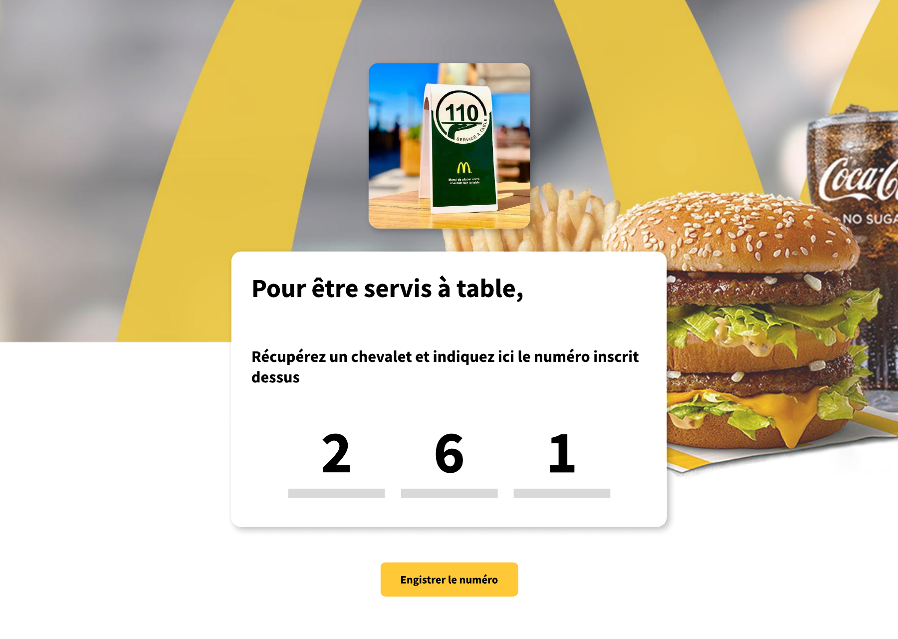
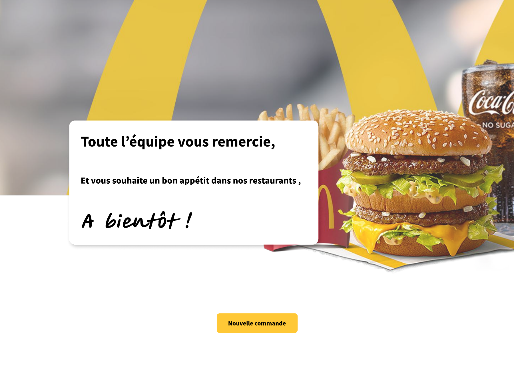

Front client, back-office + API REST, et chaine DevOps - construits from scratch pour demontrer les blocs 1, 2 et 5.
Soutenance orale - 40 min - jury mixte RNCP
La borne tactile, du premier tap au ticket. Demo live.
Modele Merise, API REST, securite by-design.
Docker une commande, CI/CD, Merise Agile + TDD.
Un seul produit, trois angles. A chaque instant, le bloc demontre est annonce.
Une borne de commande pour un fast-food, sur le modele des grandes enseignes.
Tous les modes de service sont en emballages papier (plateau ou sac). La distinction sur place / a emporter est surtout fiscale (TVA).
Un perimetre choisi et justifie - signe de maturite, pas de manque.
Modele de donnees pose tot, enrichi sprint par sprint. Source de verite unique : PROJECT_CONTEXT.md + dossier merise/.
Tests avant code sur les chemins critiques (commande, stock, securite). ~498 methodes de test PHP.
161 commits Conventional, branches feat/*, PR vers dev, hooks protegeant main/dev.
12 ADR (decisions datees) + 11 entrees de journal de bord. Transparence IA portee dans la doc.
De l'ecran d'accueil au ticket de commande.
Demonstration sur la borne.









HTML5 + CSS3 + JavaScript ES6+ modulaire. Zero dependance : ni jQuery, ni framework, ni bundler. ~2 370 lignes JS.
data.js - recuperation catalogue (fetch)state.js - panier en localStoragecheckout.js - construction du payload + paiementLe panier ne touche pas au reseau.
Aucun appel API tant que le client n'a pas paye. Le prix est recalcule cote serveur - pas de confiance au client.
Front Bloc 1 et back Bloc 2 dans la meme arborescence, exposes sur deux FQDN. Chaque jury evalue son bloc de maniere autonome.
category, product, menu, menu_slot, menu_slot_option
ingredient, product_ingredient, allergen, ingredient_allergen, stock_movement
customer_order, order_item, order_item_selection, order_item_modifier
user, role, permission, role_permission, role_visible_source
audit_log, login_throttle, pin_throttle
6 migrations
6 seeds
idempotentes
Routeur maison (methode + chemin -> controleur).
Enveloppe standard { data } / { data:null, error }.
Codes coherents : 201, 200, 409 conflit, 422 validation, 403 permission/CSRF, 404.
Le payload ne porte que l'id produit + la quantite. Le serveur relit le prix en base. RG-T16
idempotency_key UNIQUE : re-cliquer "Payer" ne facture pas deux fois. RG-T19
Decrement en une instruction SQL gardee, dans la transaction de paiement. Pas de course critique. RG-T20
22 regles transverses RG-T01 a RG-T22 (SQLi, XSS, CSRF, RBAC, audit...).
Pas de cycle preparing/ready inutile pour ce perimetre. Simplicite + immuabilite des snapshots (libelle, prix, TVA figes a la commande).
On teste une permission, pas un nom de role. admin, manager, kitchen, counter, drive. Permissions rechargees a chaque requete.
Suppression, changement de prix, RBAC, inventaire : re-autorisation par PIN, avec un backoff anti-brute-force separe du login. RG-T13 / RG-T22
Apache 2.4
PHP-FPM 8.3
MariaDB 11.4
backups + purges RGPD
one-shot, idempotent
Reseaux segmentes :
la base n'est pas exposee.
A chaque PR. Auto-merge en squash quand les checks requis passent au vert. "La meme commande qui marche sur ma machine est celle qui deploie."
| Bloc | Demontre par | Preuve |
|---|---|---|
| B1 Front | Demo borne, accessibilite, JS vanilla | 5 pages + modules JS |
| B2 Back | Merise, API REST, securite by-design | 22 entites + RG-T + tests |
| B5 DevOps | Docker une commande, CI/CD, crons | 5 services + pipeline Forgejo |
Seuil : 50 % minimum par bloc et 50 % de moyenne globale.
Un modele pose tot et une securite des la conception coutent moins cher qu'ajoutes apres.
Des questions ? Je peux approfondir n'importe quelle partie - code, modele de donnees, securite ou deploiement.
Wakdo - RNCP 37805 - Developpeur Web